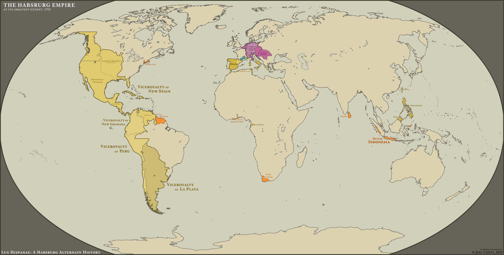

Democrat Voter Share in the 2020 Election, done fully in ArcGIS

A quick map cover for an Alternate History Scenario done in Illustrator.
A closeup of Europe from the previous map.
Africa, 1885. One of my first maps done in Illustrator.
Depicts the world of the TV Series "Avatar the last Airbender". An excellent exercise in color theory.